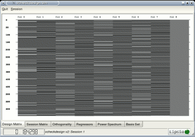
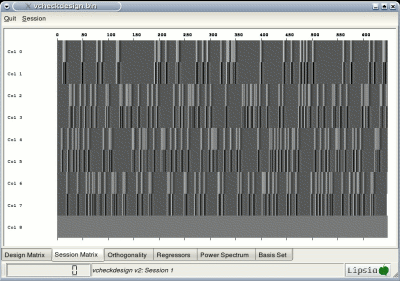
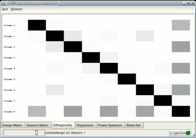
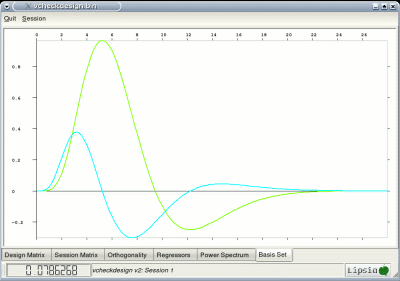
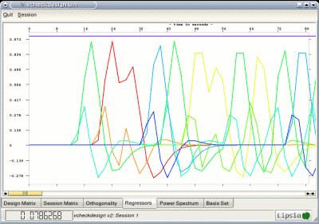
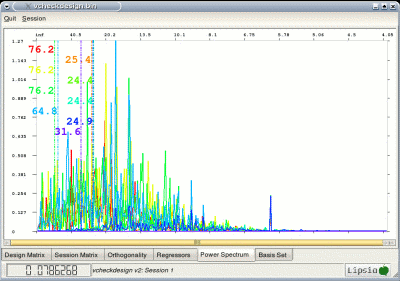
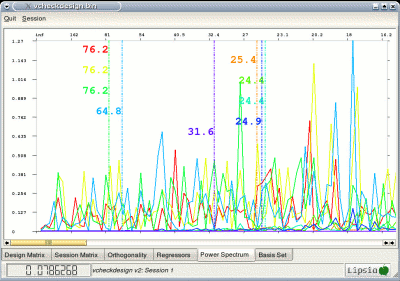

The program 'vcheckdesign' reviews a design matrix generated by the programs
'vgendesign',
'vcatdesign',
'vaddcovariates', or
'vgetcovariates'.
The program 'vcheckdesign' performs
a visualization of the design matrix in terms of the design and session matrix,
design orthogonality, regressors, and basis functions. The regressors are visualized
in the time and spectral domain.
The statistical model can be computed and visualized before fMRI data acquisition.
After planning the experiment, 'vgendesign'
can be executed without any fMRI data. The output is a vista-file
that can be visualized using 'vcheckdesign'. If a
design file (text format)
is prepared, then you can call:
vgendesign -in
design.des -out design.v -tr 2 -ntimesteps 648 -deriv 1
vcheckdesign -in design.v
In our example, there are 4 conditions, 648 timesteps, 2 basis functions per condition,
and a repetition time of 2 s.

After calling the program, a window opens showing the design
matrix. Other design properties can be viewed as follows.
Using the 'tabs' at the bottom of the window, the design matrix can be visualized
in a more detailed way. If you klick onto the second tab, the session matrix can be
visualized for each session. Compared with the design matrix, the session matrices are
rotated by 90 degrees, thus the timeline is parallel to the horizontal axis.
In our example, there is only 1 session.
Using your mouse, you can get the value of the design matrix.

Klicking the third 'tab', the design orthogonality can be computed and visualized.
For parameter estimation in the general linear model, the columns of the session matrices
have to be orthogonal. Otherwise, the parameters are not uniquely determined. As already mentioned,
the actual value of orthogonality can be obtained using the mouse. You can switch between the
sessions using the menu.

The last 'tab' yield visualisations of the basis functions.


{kind=link}
{kind=link}
{kind=link}
{kind=link}
![ All regressors (for each session and for each condition) can be visualized in the spectral domain. Often it is helpful to see the behavior of the modelling functions in the frequency domain. For a detailed view, the middle and right mouse button can be used to zoom/unzoom the signal.   This visualisation also provides a proposal for the cutoff frequency for highpass filtering of the fMRI data. Note that the values are given in seconds. In our example, a reasonable cutoff would be 76.2 seconds or higher (largest number in the power sprectrum corresponding to an experimental condition). Note that 'vpreprocess' accepts the cutoff in seconds and not in Hz.](images/regr1.gif){kind=link}
{kind=link}
{kind=link}
{kind=link}